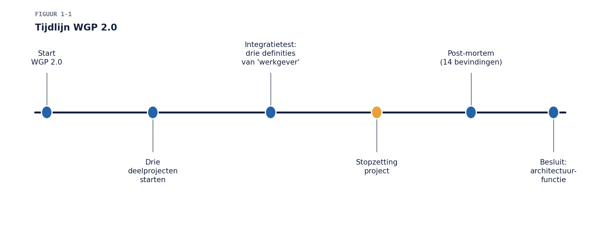
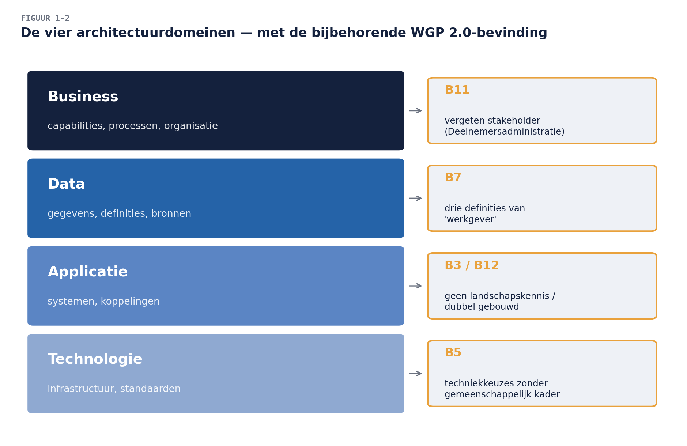
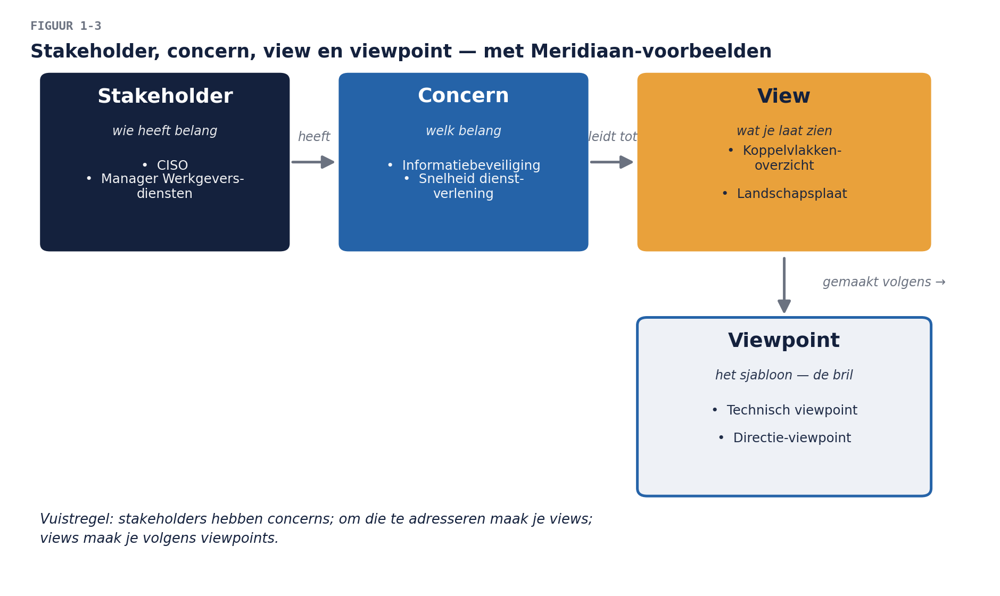

Business & Enterprise Architectuur — Niveau 1
Deel 1 · Reader — Wat is business- en enterprise-architectuur?
Positionering. Deze cursus bereidt voor op het examen TOGAF® Enterprise Architecture Foundation (OGEA-101) en ArchiMate® 3 Part 1. Zij is uitdrukkelijk géén vervanging van het officiële examenmateriaal van The Open Group. Waar relevant verwijzen we naar de TOGAF Standard, 10e editie, en de ArchiMate 3.2 Specification.
Leerdoelen
Na dit deel kun je:
- uitleggen wat enterprise-architectuur is en hoe zij zich verhoudt tot businessarchitectuur en solution-architectuur;
- de waarde van architectuur benoemen én de kosten van het ontbreken ervan herkennen in een concrete organisatie;
- de belangrijkste architectuurrollen onderscheiden en hun verantwoordelijkheden beschrijven;
- de kernterminologie van de TOGAF Standard hanteren: enterprise, architecture, stakeholder, concern, view, viewpoint;
- beargumenteren waarom een organisatie een architectuurfunctie nodig heeft — en wat er gebeurt als die ontbreekt.
Examenkoppeling (OGEA-101): dit deel raakt de leeruitkomsten rond Concepts (wat is een enterprise, wat is architectuur in de context van TOGAF, waarom een raamwerk) en de Introduction to the ADM op kennismakingsniveau. Deel 2 werkt de ADM volledig uit.
1. De casus: Meridiaan Pensioen na WGP 2.0
Meridiaan Pensioen is een middelgrote pensioenuitvoerder: circa 1.100 medewerkers, 1,2 miljoen deelnemers, drie kantoorlocaties en een applicatielandschap dat in dertig jaar organisch is gegroeid. Wie deze cursusfamilie kent, kent Meridiaan al — maar dit deel is zelfstandig leesbaar en veronderstelt geen voorkennis.
Twee jaar geleden startte Meridiaan het project Werkgeversportaal 2.0 (WGP 2.0): één nieuw portaal dat drie verouderde werkgeversapplicaties moest vervangen. Het project is vorig kwartaal stopgezet. De schade: achttien maanden doorlooptijd, een gepasseerd budget, en — pijnlijker — drie deelprojecten die elk een eigen oplossing bouwden voor hetzelfde probleem, op drie verschillende technologieën, met drie verschillende definities van het begrip “werkgever”.
De post-mortem, uitgevoerd door een extern bureau, telt veertien bevindingen. De rode draad in zeven daarvan:
- B3. “Er bestond geen gedeeld beeld van het applicatielandschap; niemand kon aangeven welke systemen door het portaal geraakt zouden worden.”
- B5. “Beslissingen over technologiekeuzes werden per deelproject genomen, zonder toetsing aan een gemeenschappelijk kader.”
- B7. “De term ‘werkgever’ bleek in de drie deelprojecten drie verschillende betekenissen te hebben, wat pas bij de integratietest aan het licht kwam.”
- B9. “Er was geen instantie die de samenhang bewaakte; de stuurgroep stuurde op tijd en geld, niet op inhoudelijke consistentie.”
- B11. “Requirements van de afdeling Deelnemersadministratie zijn nooit opgehaald, omdat geen van de deelprojecten zich eigenaar voelde.”
- B12. “Herbruikbare diensten uit het bestaande landschap zijn niet benut; twee deelprojecten bouwden functionaliteit die al bestond.”
- B14. “Het ontbrak aan een beschrijving van de gewenste eindsituatie waaraan tussenresultaten getoetst konden worden.”
De directie heeft naar aanleiding van de post-mortem één besluit genomen dat de ruggengraat van dit cursusniveau vormt: Meridiaan richt een architectuurfunctie in. Jij bent aangenomen om die op te bouwen. In tien delen werk je toe naar een architectuurvisie die je in deel 10 verdedigt voor de directie.
De zeven bevindingen hierboven zijn geen decorstuk. Elk cursusonderdeel in dit niveau grijpt op minstens één ervan terug. Aan het eind van deze reader kun je bij elke bevinding benoemen welk architectuurgebrek eraan ten grondslag ligt.

2. Wat is architectuur?
2.1 Twee definities die je moet kennen
De TOGAF Standard hanteert, in navolging van ISO/IEC/IEEE 42010, twee betekenissen van architecture:
- De fundamentele concepten of eigenschappen van een systeem in zijn omgeving, belichaamd in zijn elementen, hun relaties, en de principes van zijn ontwerp en evolutie.
- De beschrijving daarvan: een formele weergave van een systeem op componentniveau, als leidraad voor de implementatie.
Het onderscheid is niet academisch. Meridiaan heeft een architectuur — elk systeemlandschap heeft er een, ook als niemand hem ooit heeft opgeschreven. Wat Meridiaan mist, is de tweede betekenis: de beschrijving, en daarmee het vermogen erover te redeneren, erop te sturen en eraan te toetsen. Bevinding B3 (“geen gedeeld beeld van het applicatielandschap”) is precies dit gemis.
Onthoud: de vraag is nooit óf een organisatie architectuur heeft, maar of zij haar architectuur kent en bestuurt.
2.2 Enterprise
Een enterprise is in TOGAF-termen het hoogste niveau van beschrijving van een organisatie: het geheel van organisatieonderdelen met gemeenschappelijke doelen. Dat hoeft niet samen te vallen met een juridische entiteit. Voor Meridiaan kun je de enterprise op minstens drie manieren afbakenen:
- de gehele uitvoeringsorganisatie inclusief bestuursbureau;
- alleen het uitvoeringsbedrijf (administratie, vermogensbeheer buiten scope);
- de keten: Meridiaan plus de aangesloten fondsen en hun werkgevers.
De afbakening van de enterprise is een keuze, en een van de eerste die een architect expliciet maakt. Een verkeerde of impliciete afbakening plant problemen: WGP 2.0 bakende de enterprise impliciet af als “de drie te vervangen applicaties” — waardoor de Deelnemersadministratie buiten beeld bleef (bevinding B11).
2.3 De architectuurdomeinen
TOGAF onderscheidt vier architectuurdomeinen, die samen het geheel beschrijven:
| Domein | Beschrijft | Voorbeeldvraag bij Meridiaan |
|---|---|---|
| Businessarchitectuur | strategie, governance, organisatie, kernprocessen | Welke capabilities heeft Meridiaan nodig om werkgevers te bedienen? |
| Dataarchitectuur | structuur van logische en fysieke gegevens en beheermiddelen | Wat ís een “werkgever”, en welk systeem is de bron? |
| Applicatiearchitectuur | de applicaties, hun interacties en hun relatie tot de kernprocessen | Welke applicaties raakt een nieuw portaal? |
| Technologiearchitectuur | de logische en fysieke technologie-infrastructuur | Op welke platformen draait dit, en wat is de standaard? |
Bevinding B7 (drie definities van “werkgever”) is een dataarchitectuurgebrek; B5 (technologiekeuzes per deelproject) een technologiearchitectuurgebrek; B12 (herbouw van bestaande diensten) een applicatiearchitectuurgebrek; B11 (vergeten stakeholder) een businessarchitectuurgebrek. De delen 4 t/m 7 behandelen deze vier domeinen elk afzonderlijk.

2.4 Enterprise-, business- en solution-architectuur
Drie termen die in vacatures, organisaties en frameworks door elkaar lopen. In deze cursus hanteren we de volgende ordening:
- Enterprise-architectuur (EA) is de discipline die de vier domeinen in samenhang beschrijft en bestuurt, voor de enterprise als geheel, met de horizon van jaren. De enterprise-architect bewaakt de samenhang.
- Businessarchitectuur (BA) is enerzijds een van de vier domeinen bínnen EA (fase B in de ADM, deel 4), en anderzijds een zelfstandige discipline met eigen technieken en een eigen body of knowledge: de BIZBOK® Guide van de Business Architecture Guild. In die tweede betekenis verbindt de businessarchitect strategie met uitvoering via capabilities, waardestromen en organization mapping. Deel 12 en deel 25 zijn geheel aan die discipline gewijd; deze cursus doet beide betekenissen recht — dat is de “B” in de cursustitel.
- Solution-architectuur is architectuur op het niveau van één oplossing, project of systeem, met de horizon van maanden. De solution-architect werkt bínnen de kaders die de enterprise-architectuur stelt.
De verhouding laat zich samenvatten als: EA stelt de kaders, solution-architectuur werkt binnen de kaders, businessarchitectuur (als discipline) voedt de kaders vanuit de strategie. WGP 2.0 had drie solution-architecten — één per deelproject — maar geen enterprise-architectuur waarbinnen zij werkten. Bevinding B9 in één zin.
3. Waarom architectuur? De waarde — en de kosten van het gemis
3.1 De waarde, in vier stromen
De TOGAF Standard formuleert de waarde van enterprise-architectuur als het vermogen van de organisatie om verandering effectief en efficiënt te realiseren. Concreter, in vier waardestromen:
- Betere besluitvorming. Beslissers zien de gevolgen van een keuze vóórdat die onomkeerbaar is. Een investeringsbesluit over een nieuw portaal wordt genomen met een landschapskaart op tafel, niet met drie losse projectvoorstellen.
- Lagere kosten door hergebruik en standaardisatie. Elke gestandaardiseerde technologie is er één minder om te beheren; elke herbruikbare dienst is er één minder om te bouwen (het antwoord op B12).
- Snellere verandering. Wie zijn landschap kent, kan sneller inschatten wat een verandering raakt. Impactanalyse van weken wordt impactanalyse van dagen.
- Beheerst risico. Samenhangbewaking voorkomt dat inconsistenties pas bij de integratietest — of erger, in productie — zichtbaar worden (het antwoord op B7).
3.2 De kosten van geen architectuur
Het spiegelbeeld is voor een directie vaak overtuigender dan de waarde. De kosten van het gemis zijn bij Meridiaan geen theorie:
- Dubbelwerk: twee deelprojecten herbouwden bestaande functionaliteit (B12).
- Integratiefaal: drie definities van “werkgever” ontdekt bij de integratietest (B7) — de duurste plek om zoiets te ontdekken, op productie na.
- Besluitloosheid of willekeur: technologiekeuzes per deelproject (B5) leiden tot een landschap dat duurder wordt met elke keuze.
- Onzichtbare stakeholders: de Deelnemersadministratie (B11).
- Stuurloosheid: een stuurgroep die op tijd en geld stuurt zonder inhoudelijk toetskader (B9, B14) kan alleen nog maar constateren dat het misgaat.
Nuance die je als architect siert: architectuur is geen gratis verzekering. Zij kost capaciteit, vraagt discipline en kan doorschieten in bureaucratie — het “ivoren toren”-risico komt in deel 19 en deel 21 uitgebreid terug. De businesscase voor de architectuurfunctie is altijd een afweging, nooit een automatisme. Wie dat erkent, wint bij een kritische directie meer vertrouwen dan wie architectuur als vanzelfsprekend goed presenteert.
3.3 Architectuur en de wendbare organisatie
Een hardnekkig misverstand: “architectuur en agile staan op gespannen voet.” Het tegendeel is verdedigbaar: juist een organisatie die in korte cycli verandert, heeft een stabiel gedeeld beeld nodig van waar zij naartoe werkt — anders optimaliseert elk team lokaal en beweegt het geheel nergens heen. WGP 2.0 werkte met drie “zelfstandige” deelprojecten en bewees het punt. Hoe architectuur en agile werkwijzen zich productief verhouden is het onderwerp van deel 19; hier volstaat de stelling dat kaders en snelheid elkaar nodig hebben.
4. Stakeholders, concerns, views en viewpoints
Vier begrippen die het TOGAF-vocabulaire — en het Foundation-examen — dragen:
- Een stakeholder is een individu, team of organisatie met belangen bij (concerns over) het systeem. Bij Meridiaan: de directie, de manager Werkgeversdiensten, de CISO, DNB als toezichthouder, de ondernemingsraad.
- Een concern is een belang dat voor een stakeholder wezenlijk is: kosten, continuïteit, compliance, veranderbaarheid, veiligheid.
- Een view is wat je een stakeholder laat zien: een weergave van de architectuur vanuit diens concerns.
- Een viewpoint is het sjabloon daarvoor: de conventies waarmee je zo’n view construeert — “de bril”, waar de view “het uitzicht door die bril” is.
De vuistregel: stakeholders hebben concerns; om die te adresseren maak je views; views maak je volgens viewpoints. Een landschapsplaat voor de directie en een koppelvlakkenoverzicht voor een ontwikkelteam beschrijven dezelfde architectuur door verschillende brillen. Wie één plaat voor iedereen maakt, bedient niemand.
Deze begrippen lijken nu abstract; in deel 3 (stakeholders en architectuurvisie) en deel 8 (ArchiMate-viewpoints) worden ze gereedschap.

5. De rollen in het architectuurvak
5.1 Rolgebouw
In een organisatie van Meridiaans omvang tref je doorgaans deze rollen aan (functietitels wisselen per organisatie; de verantwoordelijkheden zijn wat telt):
| Rol | Horizon | Zwaartepunt | Typische producten |
|---|---|---|---|
| Enterprise-architect | 2-5 jaar | samenhang over domeinen en veranderingen heen | architectuurvisie, doelarchitectuur, roadmap, principes |
| Businessarchitect | 1-3 jaar | strategie vertalen naar capabilities en waardestromen | capability map, waardestroomanalyse, business-outcomeketens |
| Domeinarchitect (data, applicatie, technologie, security) | 1-3 jaar | diepgang binnen één domein | domeinarchitectuur, standaarden, referentiemodellen |
| Solution-architect | 3-18 maanden | één oplossing of project | projectstartarchitectuur (PSA), oplossingsontwerp |
Kleine organisaties combineren rollen in één persoon; grote splitsen verder uit. Voor het examen hoef je geen organogrammen te kennen — wel het onderscheid in horizon en zwaartepunt.
5.2 De architect als adviseur
De belangrijkste zin van dit deel: de architect beslist niet — de architect zorgt dat er goed beslist wordt. Investeringsbesluiten, projectkeuzes en risicoacceptatie liggen bij lijn en bestuur. De architect levert daarvoor het inzicht (views), het kader (principes en doelarchitectuur) en het advies — gevraagd én ongevraagd.
Dat maakt adviesvaardigheid een kerncompetentie, geen bijzaak. Drie praktijkregels die deze hele cursus terugkeren:
- Adviseer in opties, niet in dictaten. “Er zijn drie routes; ik adviseer route B, en dit zijn de trade-offs” overtuigt; “het moet zo” vervreemdt.
- Spreek de taal van de concern. De directie hoort “continuïteit en kosten”, het ontwikkelteam hoort “koppelvlakken en afhankelijkheden” — over dezelfde architectuur.
- Wees aanwezig vóór het besluit, niet erna. De architect die pas bij de toetsing verschijnt, is een poortwachter; de architect die aan de voorkant meedenkt, is een adviseur. (Het verschil werkt deel 19 uit; het is ook het verschil tussen gehate en gewaardeerde architectuurfuncties.)
In niveau 3 van deze cursus — de Open CA-voorbereiding — wordt precies dit het examen: niet wat je weet, maar hoe je architectuurbeslissingen hebt gewogen, verantwoord en verdedigd. Het is daarom geen toeval dat elke werkboekopdracht in deze cursus eindigt met een verantwoordingsvraag: waarom koos je dit?
5.3 De architectuurfunctie
De rollen samen vormen de architectuurfunctie: het geheel van mensen, producten, processen en besluitvorming waarmee de organisatie haar architectuur kent en bestuurt. Waar die functie organisatorisch hangt (onder de CIO? onder strategie? federatief in de domeinen?) en hoe zij zich verhoudt tot de besluitvorming (adviserend? toetsend? beslissend?) — dat zijn ontwerpvragen die jij voor Meridiaan gaat beantwoorden. Deel 9 en deel 21 geven daarvoor het governance-gereedschap; de capstone in deel 10 vraagt je positie te kiezen en te verdedigen.
Voor nu één waarschuwing uit de praktijk: een architectuurfunctie die begint met een dik document en een streng toetsproces, verliest de organisatie voordat zij waarde heeft laten zien. Een architectuurfunctie die begint met het oplossen van een gevoeld probleem — bij Meridiaan: “niemand weet welke systemen we hebben” (B3) — bouwt krediet op. Volgorde is strategie.
6. Raamwerken: waarom TOGAF?
Een architectuurraamwerk biedt een gemeenschappelijke taal, een methode en een productenset, zodat niet elke organisatie het vak opnieuw hoeft uit te vinden. De TOGAF Standard van The Open Group is het meest gebruikte raamwerk wereldwijd; het hart ervan is de Architecture Development Method (ADM) — een cyclische methode die van visie via de vier domeinen naar realisatie en beheer loopt. Deel 2 behandelt de ADM volledig; de delen 3 t/m 9 volgen daarna grofweg haar fasen.
TOGAF is nadrukkelijk een raamwerk, geen wet: de standard zelf schrijft voor dat je haar aanpast aan de organisatie (“tailoring”). Naast TOGAF bestaan andere raamwerken en aanpalende standaarden — BIZBOK voor businessarchitectuur (deel 12), ArchiMate als modelleertaal (deel 8) — en volwassen architectuurfuncties combineren ze. In deze cursus is TOGAF de dragende methode, ArchiMate de tekentaal en BIZBOK de businessarchitectuur-verdieping.
Voor het examen: ken het onderscheid tussen de TOGAF Standard als raamwerk, de ADM als methode daarbinnen, en het Enterprise Continuum / Architecture Repository als opslag- en ordeningsconcepten (deel 2 en deel 9).
7. Samenvatting
- Elke organisatie heeft architectuur; de vraag is of zij die kent en bestuurt. Het instrument daarvoor is de architectuurbeschrijving en de functie eromheen.
- TOGAF onderscheidt vier domeinen — business, data, applicatie, technologie — die samen de enterprise-architectuur vormen. Elk WGP 2.0-symptoom is naar een domeingebrek te herleiden.
- Enterprise-architectuur stelt kaders voor jaren; solution-architectuur werkt binnen die kaders voor één oplossing; businessarchitectuur voedt als discipline de kaders vanuit de strategie.
- Stakeholders hebben concerns; views adresseren die volgens viewpoints. Eén plaat voor iedereen bedient niemand.
- De architect beslist niet, maar zorgt dat er goed beslist wordt: opties, taal van de concern, aanwezig vóór het besluit.
- De waarde van architectuur — betere besluiten, hergebruik, snelheid, beheerst risico — heeft een prijs in capaciteit en discipline; de businesscase is een afweging, en de volgorde van opbouw is strategie.
Begrippenlijst
| Begrip | Omschrijving |
|---|---|
| Enterprise | hoogste beschrijvingsniveau van de organisatie; afbakening is een expliciete keuze |
| Architectuur | (1) fundamentele inrichting van een systeem; (2) de beschrijving daarvan |
| Architectuurdomein | business, data, applicatie of technologie |
| Enterprise-architect | bewaakt samenhang over domeinen en veranderingen, horizon van jaren |
| Solution-architect | ontwerpt één oplossing binnen de EA-kaders |
| Businessarchitect | vertaalt strategie naar capabilities en waardestromen (BIZBOK-discipline) |
| Stakeholder / concern | belanghebbende / diens wezenlijke belang |
| View / viewpoint | weergave voor een stakeholder / het sjabloon waarmee die gemaakt wordt |
| ADM | Architecture Development Method, de cyclische kernmethode van TOGAF |
| Architectuurfunctie | mensen, producten, processen en besluitvorming rond architectuur |
Verder lezen
- The Open Group, TOGAF® Standard, 10th Edition — Introduction and Core Concepts (examenstof)
- ISO/IEC/IEEE 42010 — Architecture description (achtergrond bij §2.1 en §4)
- Business Architecture Guild, BIZBOK® Guide — Part 1 (vooruitblik op deel 12)
Volgende deel: de ADM — de motor van TOGAF, fase voor fase.